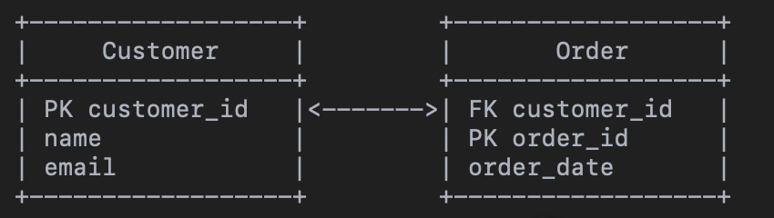
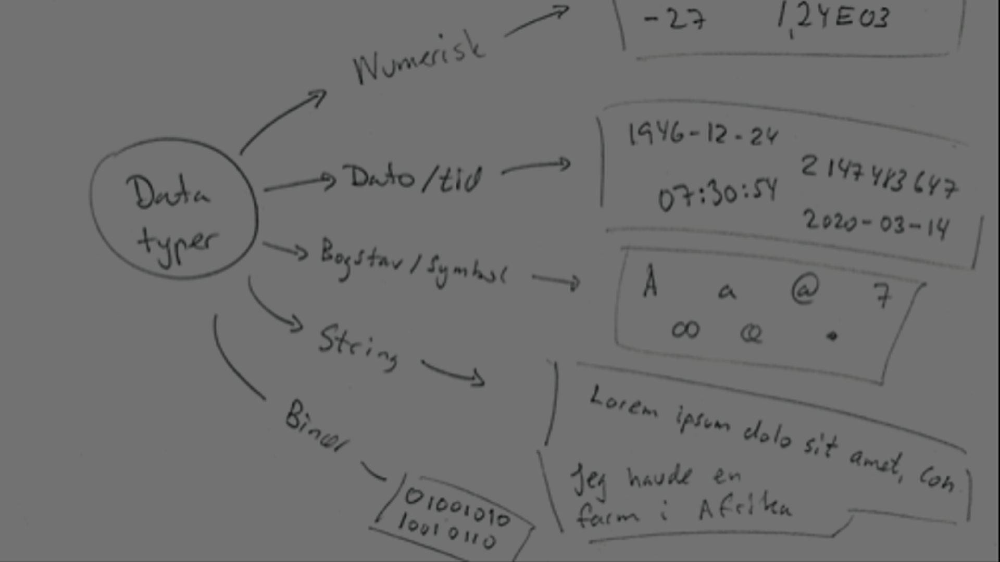
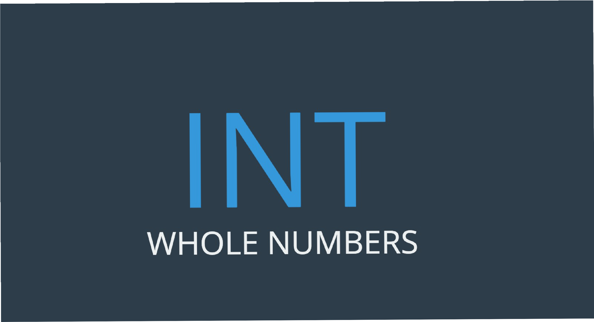
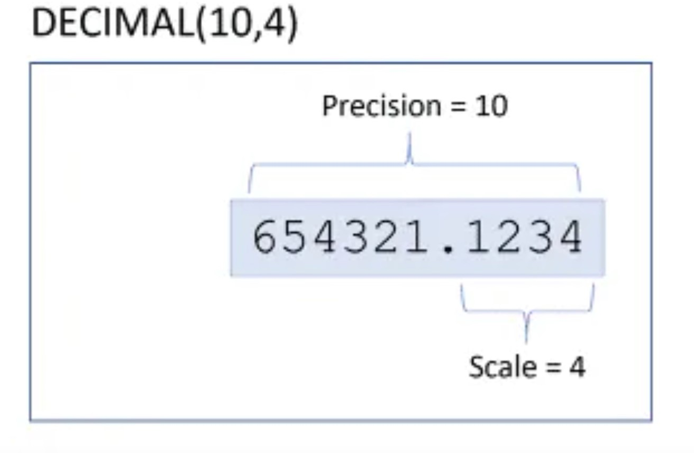
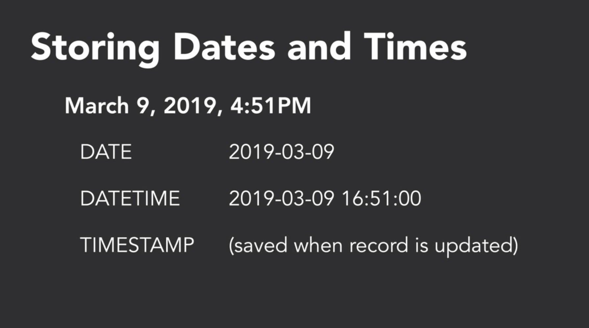

Database og MySQL · Gang 3
xbi@2025
Opgave
Gennemgå
Øvelse 3
Fordelene ved at bruge et DBMS (Database Management System) frem for et Excel-ark
Grundlagt
SQL = Structured Query Language. Bruges til at gemme, manipulere og hente data i relationelle databaser. Understøttes af systemer som MySQL, MS Access, Oracle m.fl.
Værktøj
https://dev.mysql.com/doc/refman/8.4/en/
(der er nogen har nyere version)
Er der nogen forskel mellem SQL og MySQL?
Overblik
Grundlag
Identificerer den enkelte post i databasen. Vi siger også, at primærnøglen gør hver post i tabellen unik.
En fremmednøgle refererer til primærnøglen i en anden tabel og forbinder data på tværs af tabeller.
Eksempel

11/10/2025
s. 9
Datatyper
Null repræsenterer en værdi, der er ukendt eller har ingen værdi.
Tips: NULL bruges ofte til valgfri felter, hvor man ikke altid har data. Kolonner, der ikke må være tomme, sættes til NOT NULL (SQL).
Reference
Se den officielle oversigt over datatyper hos W3Schools.
Øvelse
Open sample DB world-mysql.sql – undersøg tabellen city, og find datatyperne.
Eksempel
CountryCode (char 3)
Øvelse
Open sample DB Albumn – se tabellen track, kolonnen title.
Øvelse
Open sample DB scratch.sql – se tabellen sale med felterne id og price.

Datatyper

Øvelse
Open sample DB albumn – se tabellen albumn, kolonnen released.

MySQL – syntaks
Pearson Education © 2014
Syntaks
MySQL er relativt let at lære: det er ikke-proceduralt – du angiver, hvilken information du har brug for, i stedet for hvordan den skal hentes.
Pearson Education © 2014
s. 22Syntaks
En SQL-sætning består af reserverede ord og brugerdefinerede ord. »Keywords« er en fast del af SQL og skal staves nøjagtigt som foreskrevet – f.eks. SELECT, DELETE eller BIGINT.
Kilder: https://docs.oracle.com/cd/E17952_01/mysql-8.0-en/keywords.html
Syntaks
Hvis du har en brugerdefineret tabel eller kolonne, der indeholder et reserveret ord i SQL, kan du stadig bruge det – men du skal sætte navnet i backticks (`) i MySQL.
CREATE TABLE `order` ( `id` INT PRIMARY KEY, `customer` VARCHAR(100), `amount` DECIMAL(10,2) );
Syntaks
Repræsenterer reserverede ord (f.eks. SELECT, INSERT, WHERE)
Repræsenterer brugerdefinerede ord (f.eks. tabelnavne og kolonnenavne: kunde, ordre, pris)
Pearson Education © 2014
s. 25Syntaks
Ikke-numeriske literaler skal være omgivet af enkeltanførselstegn (f.eks. ’London’).
Numeriske literaler må ikke være omgivet af anførselstegn.
-- Non-numeric literal (string) SELECT * FROM kunder WHERE by = 'London'; -- Numeric literal SELECT * FROM ordre WHERE beløb > 650;
Pearson Education © 2014
s. 26SQL HandsON
SQL-kommandoer
Syntax: CREATE DATABASE databasename;
CREATE DATABASE sales1;
SQL-kommandoer
CREATE TABLE kunder ( kundenr INT AUTO_INCREMENT PRIMARY KEY, navn VARCHAR(50), gade VARCHAR(30), postnr INT(4), email VARCHAR(50), mobil INT(8) );
SQL
Her er den generelle SQL-syntaks for INSERT INTO-kommandoen til at indsætte data i en MySQL-tabel:
To insert string data types, it is required to keep all the values in single quote, for example:- 'value'
SQL
SQL
SQL
SELECT * FROM kunder;
Øvelse
I skal betragte skoledatabase med tre tabeller for Kursus, Elever og Lærere.
Hvilke nøglefelter skal der være i de enkelte tabeller?
Hvilken datatype i de enkelte tabeller?
Udfordring
topic til undersøge
topic til undersøge
Quiz
Hvad er forskellen på en primærnøgle og en fremmednøgle?
A) De bruges til at sortere dataB) Primærnøglen identificerer en post, fremmednøglen skaber relationerC) De er begge valgfri
Hvilken datatype bruges til tekst i MySQL?
A) INTB) VARCHARC) DATE
Hvad betyder NULL i en database?
A) En tom strengB) En ukendt eller manglende værdiC) En fejl
Hvordan skriver man en SQL-sætning for at hente alle rækker fra en tabel?
A) SELECT ALL FROM table;B) GET * FROM table;C) SELECT * FROM table;
Hvad skal man gøre, hvis man vil bruge et reserveret ord som tabelnavn?
A) Undgå detB) Sætte det i backticks (`)C) Skrive det med små bogstaver
← → naviger · O oversigt · F fuld skærm